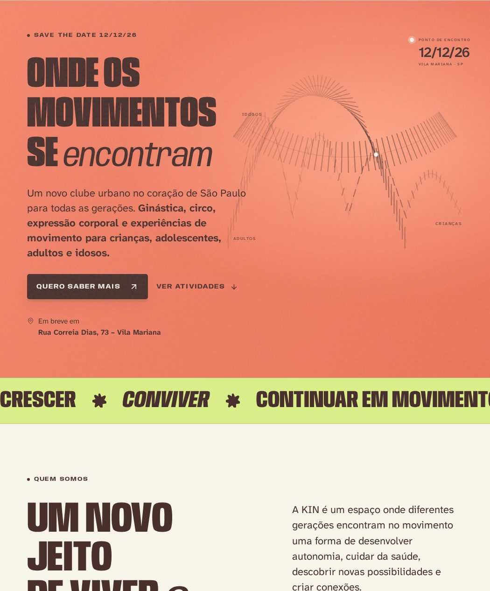
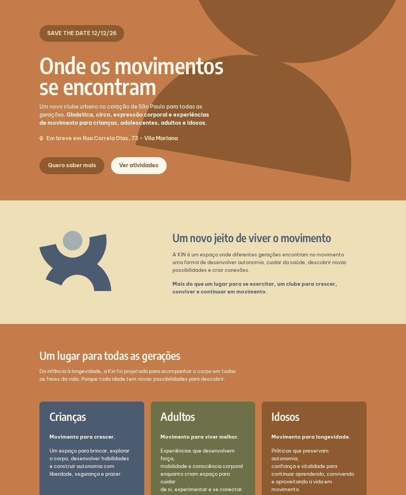

Versão 1Setembro 2026

Direção autoral
Movimento em cada detalhe
- Tipografia que comprime e estica
- Trajetórias que se encontram no hero
- Formas 3D em movimento
Versão 2Setembro 2026

Fiel ao briefing
O briefing, do jeito que foi desenhado
- Layout, cores e vetores do PDF
- Copy integral do briefing
- Ícones e formas originais